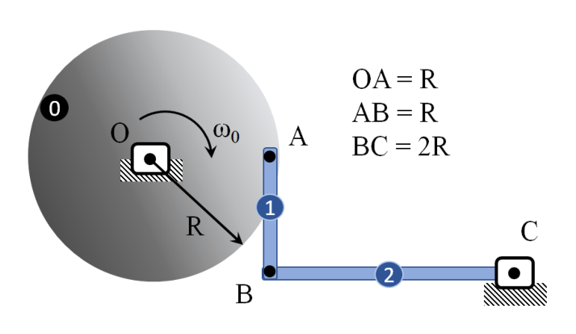
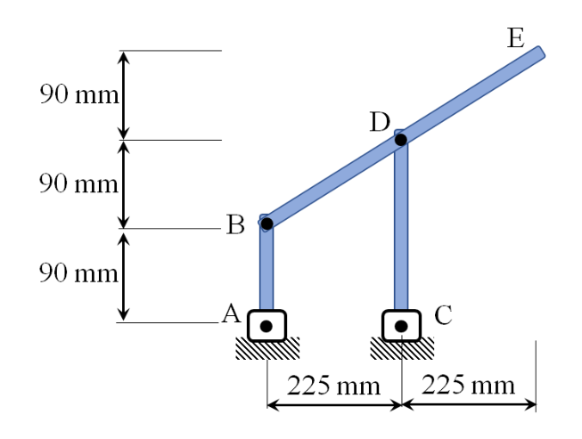
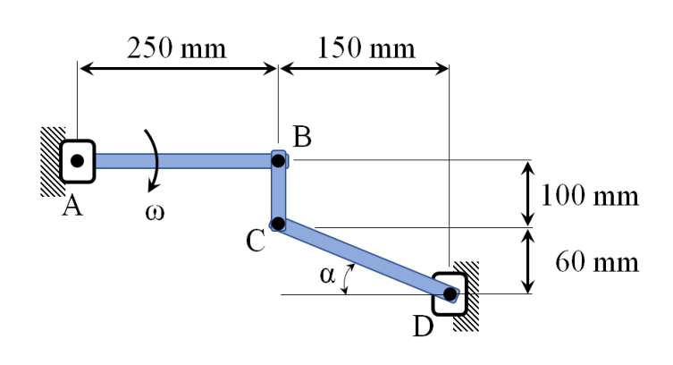
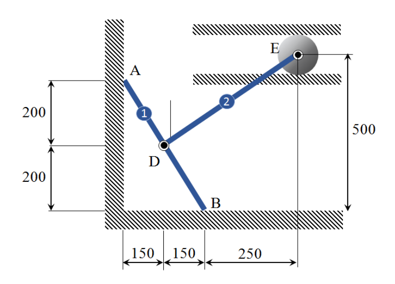
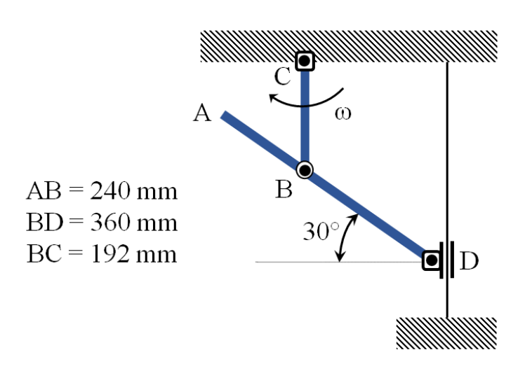
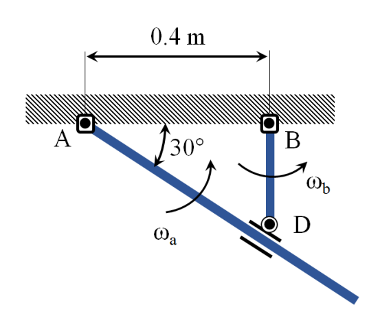
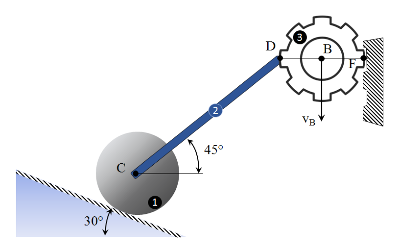
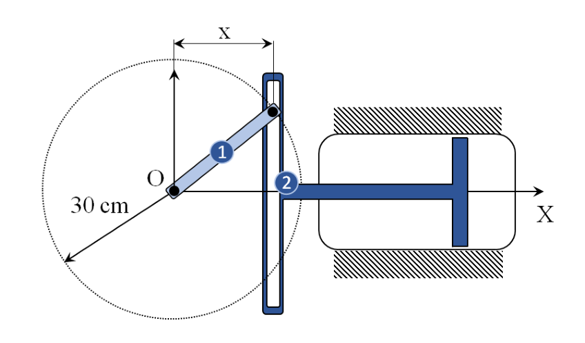
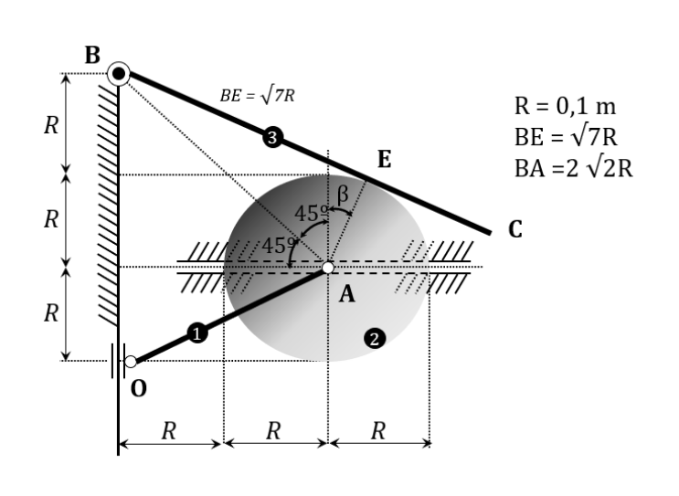
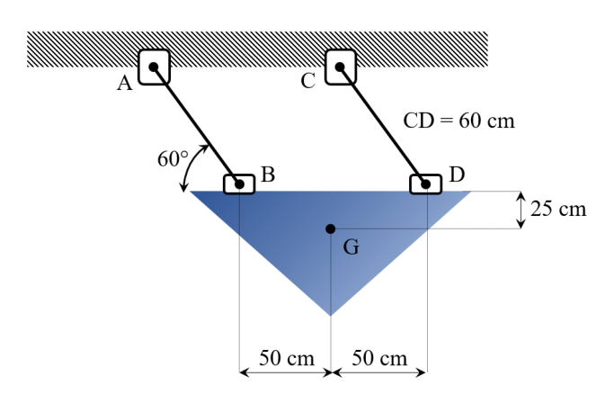

Mecanismo disco-barra: velocidades y aceleraciones angulares
En un mecanismo, el disco gira con velocidad angular \(\omega_0\) constante. Calcular:
a) Velocidad angular de las barras (1) y (2).
b) Aceleración angular de las barras (1) y (2).
c) Aceleración de los centros de gravedad de las barras (1) y (2).
Geometría: \(OA = R\), \(AB = R\), \(BC = 2R\).

| Disco (O fijo) | \(\omega_0\) = cte. antihorario |
| Geometría | \(OA=R\) horizontal, \(AB=R\) vertical (B bajo A), \(BC=2R\) horizontal (C fijo, a la derecha de B) |
| Incógnitas | \(\omega_1,\alpha_1\) (barra AB) · \(\omega_2,\alpha_2\) (barra BC) · \(a_{G_1}, a_{G_2}\) |
¿Por qué? El centro O del disco está fijo, así que el disco tiene un eje de rotación fijo. La ecuación fundamental del sólido rígido \(\vec{v} = \vec{\omega}\times\vec{r}\) da directamente la velocidad de cualquier punto del disco una vez conocidos \(\omega\) y la posición respecto de O.
El disco gira con \(\vec{\omega}_0=\omega_0\,\vec{k}\) (antihorario). Punto A en \(\vec{r}_{OA}=R\,\vec{i}\):
¿Por qué? Necesitamos saber cómo gira la barra AB. Para eso escribimos la velocidad del punto B de dos maneras: como punto de la barra AB (a través de A) y como punto de la barra BC (a través de C fijo). La igualdad de ambas expresiones y la restricción geométrica de BC nos darán la incógnita \(\omega_1\).
Barra AB vertical, \(\vec{r}_{AB}=-R\,\vec{j}\). La velocidad de B a través de la barra AB es:
Restricción de BC: C es un apoyo fijo y BC es horizontal, por lo que B solo puede moverse perpendicular a BC, es decir, verticalmente. La componente horizontal de \(\vec{v}_B\) debe ser cero:
Consecuencia: \(\vec{v}_B = \omega_0 R\,\vec{j}\).
¿Por qué? La barra BC gira alrededor del apoyo fijo C. Conocida la velocidad de B (extremo de BC), podemos calcular \(\omega_2\) directamente usando la relación de velocidades del sólido rígido con punto fijo: \(v = \omega \cdot r\) siendo \(r\) la distancia de B a C.
C fijo, \(\vec{r}_{CB}=-2R\,\vec{i}\). Velocidad de B:
¿Por qué? La aceleración de un punto en movimiento circular tiene dos componentes: centrípeta \(-\omega^2 r\) (hacia el centro, debida al cambio de dirección de la velocidad) y tangencial \(\alpha\times r\) (perpendicular, debida al cambio de módulo). Como \(\omega_0\) es constante, \(\alpha_0=0\) y solo existe la componente centrípeta.
¿Por qué? Igual que con velocidades, escribimos la aceleración de B de dos maneras: a través de la barra AB (con \(\alpha_1\) incógnita) y a través de la barra BC (con \(\alpha_2\) incógnita). La ecuación vectorial da un sistema de dos ecuaciones escalares que permiten despejar ambas incógnitas.
Aceleración de B a través de AB (con \(\omega_1=0\)):
Aceleración de B a través de BC (B gira alrededor de C fijo, \(\omega_2=\omega_0/2\)):
Igualando componente a componente:
¿Por qué? Los centros de gravedad \(G_1\) y \(G_2\) son puntos fijos de las barras AB y BC respectivamente. Aplicamos la misma ecuación de aceleración relativa partiendo de un punto cuya aceleración ya conocemos (A para \(G_1\), C para \(G_2\)).
\(G_1\) = punto medio de AB: \(\vec{r}_{AG_1}=-\tfrac{R}{2}\,\vec{j}\)
\(G_2\) = punto medio de BC: \(\vec{r}_{CG_2}=-R\,\vec{i}\). Como \(\alpha_2=0\), solo hay aceleración centrípeta:
Barra \(AB\) con \(\omega = 6\ \text{rad/s}\): aceleración de \(D\), \(\alpha_{BDE}\) y aceleración de \(E\)
La barra \(AB\) tiene velocidad angular de \(6\ \text{rad/s}\) en el sentido de las agujas del reloj. Calcular:
a) Aceleración del punto \(D\).
b) Aceleración angular de la barra \(BDE\).
c) Aceleración del punto \(E\).
Geometría: segmentos verticales de \(90\ \text{mm}\) cada uno (3 tramos), horizontales de \(225\ \text{mm}\).

| Barra AB | \(\omega_{AB}=6\ \text{rad/s}\) horario, \(\alpha_{AB}=0\) |
| Geometría | Segmentos de \(90\ \text{mm}\) y distancia horizontal \(225\ \text{mm}\) (ver figura) |
| Incógnitas | \(a_D\), \(\alpha_{BDE}\), \(a_E\) |
¿Por qué? La barra AB tiene un apoyo fijo en A, así que es un sólido rígido con punto fijo. La velocidad de cualquier punto suyo es \(v = \omega \cdot r\) y su aceleración es puramente centrípeta (pues \(\alpha_{AB}=0\)).
¿Por qué? Escribimos la velocidad de D como suma de la velocidad de B (conocida) más el término de rotación de la barra BDE. El punto D está sujeto por una guía que restringe su movimiento a una dirección, por lo que la componente perpendicular a esa dirección debe ser cero. Esa condición determina \(\omega_{BDE}\).
¿Por qué? La aceleración de D se expresa igual que la velocidad pero añadiendo la aceleración centrípeta \(-\omega_{BDE}^2\,\vec{r}_{BD}\). La misma restricción de la guía de D (que limita la dirección de \(\vec{a}_D\)) anula una componente, permitiendo despejar \(\alpha_{BDE}\).
¿Por qué? E es otro punto de la barra BDE. Conocidos ya \(\omega_{BDE}\) y \(\alpha_{BDE}\), su aceleración se obtiene directamente aplicando la ecuación del sólido rígido desde B.
Mecanismo \(AB\)–\(BC\)–\(CD\) con \(\omega_{AB} = 4\ \text{rad/s}\): velocidades y aceleraciones angulares
La barra \(AB\) tiene velocidad angular de \(4\ \text{rad/s}\) en sentido horario. Calcular la velocidad angular y aceleración angular de:
a) Barra \(BC\).
b) Barra \(CD\).
Geometría: \(AB = 250\ \text{mm}\), \(BC = 150\ \text{mm}\), altura \(100\ \text{mm}\), \(60\ \text{mm}\).

| Barra AB | \(\omega_{AB}=4\ \text{rad/s}\) horario, \(\alpha_{AB}=0\) |
| Geometría | \(AB=250\ \text{mm}\), \(BC=150\ \text{mm}\); alturas y ángulos según figura |
| Incógnitas | \(\omega_{BC},\alpha_{BC}\) y \(\omega_{CD},\alpha_{CD}\) |
¿Por qué? A es un apoyo fijo y AB gira con \(\omega_{AB}\) constante. El punto B describe una circunferencia de radio AB alrededor de A, por lo que su velocidad es tangencial y de módulo \(\omega_{AB}\cdot AB\). La aceleración solo tiene componente centrípeta (\(\alpha_{AB}=0\)).
¿Por qué? El Centro Instantáneo de Rotación (EIR) es el único punto de la barra (o su extensión) con velocidad nula en el instante considerado. Se localiza en la intersección de las perpendiculares a las velocidades de dos puntos conocidos. Una vez localizado, la relación \(v=\omega\cdot d\) (siendo \(d\) la distancia al EIR) permite calcular \(\omega\) sin resolver un sistema vectorial completo.
Las perpendiculares a \(\vec{v}_B\) (conocida) y a \(\vec{v}_C\) (restringida a ser \(\perp\) a CD, pues D es fijo) se cruzan en el EIR de BC. Con las distancias geométricas:
¿Por qué? D es un apoyo fijo, por lo que CD gira con \(\omega_{CD}\) alrededor de D. Con la velocidad de C ya conocida del paso anterior, la relación \(v_C = \omega_{CD}\cdot CD\) es inmediata.
¿Por qué? Ahora se aplica la ecuación de aceleración relativa entre B y C (puntos de la barra BC). La aceleración de C se conoce también como punto de CD (que gira alrededor de D fijo). Las dos expresiones de \(\vec{a}_C\) forman un sistema de 2 ecuaciones escalares con incógnitas \(\alpha_{BC}\) y \(\alpha_{CD}\).
Dos barras de \(500\ \text{mm}\) articuladas en \(D\): velocidades angulares y velocidad de \(E\)
Dos barras de \(500\ \text{mm}\) articuladas por el pasador \(D\). El punto \(B\) se mueve hacia la izquierda con velocidad constante de \(360\ \text{mm/s}\). Calcular:
a) Velocidad angular de las barras (1) y (2).
b) Velocidad del punto \(E\).
Geometría: \(AD = DB = 200\ \text{mm}\); distancias horizontales \(150 + 150 + 250\ \text{mm}\).

| Punto B | \(v_B=360\ \text{mm/s}\) constante (hacia la izquierda) |
| Barras | Longitud \(500\ \text{mm}\); \(AD=DB=200\ \text{mm}\) |
| Geometría | Distancias horizontales \(150+150+250\ \text{mm}\); ver figura |
| Incógnitas | \(\omega_1,\omega_2\) y \(v_E\) |
¿Por qué? La barra 1 tiene un apoyo fijo en A y el punto B se mueve horizontalmente (deslizadera horizontal). Las perpendiculares a \(\vec{v}_A=\vec{0}\) (dirección indeterminada, no sirve) y a \(\vec{v}_B\) (vertical, por ser B en guía horizontal) se cortan en el EIR. La distancia de B al EIR nos da \(\omega_1\).
¿Por qué? El pasador D comparte la velocidad calculada en el paso 1. La barra 2 tiene un apoyo fijo en su otro extremo. Con \(v_D\) conocido y la geometría de la barra 2, la ecuación \(v = \omega \cdot r\) da directamente \(\omega_2\).
¿Por qué? E es un punto de la barra 2 a distancia conocida de su apoyo fijo. Con \(\omega_2\) ya calculado, su velocidad sigue la misma relación lineal.
Barra \(BC\) con \(\omega = 4\ \text{rad/s}\): velocidad angular de \(AD\) y deslizadera
La barra \(BC\) tiene velocidad angular de \(4\ \text{rad/s}\) constante en el sentido de las agujas del reloj. Calcular:
a) Velocidad angular de la barra \(AD\).
b) Velocidad y aceleración de la deslizadera \(D\).
Datos: \(AB = 240\ \text{mm}\), \(BD = 360\ \text{mm}\), \(BC = 192\ \text{mm}\).

| Barra BC | \(\omega_{BC}=4\ \text{rad/s}\) horario, \(\alpha_{BC}=0\) |
| Geometría | \(AB=240\ \text{mm}\), \(BD=360\ \text{mm}\), \(BC=192\ \text{mm}\) |
| Incógnitas | \(\omega_{AD}\), \(v_D\) y \(a_D\) |
¿Por qué? B es el apoyo fijo de la barra BC. Todos los puntos de BC tienen velocidades que se calculan directamente desde B como \(v = \omega_{BC} \cdot r\).
¿Por qué? D pertenece a la vez a la barra AD (que gira alrededor de A fijo) y a la deslizadera. La deslizadera permite que el punto D se mueva en la dirección de la barra AD pero no perpendicular a ella. La componente de \(\vec{v}_D\) perpendicular a AD debe coincidir con la de la barra BC. Esa condición da \(\omega_{AD}\).
¿Por qué? El punto D desliza sobre la barra AD al mismo tiempo que ésta gira. En este caso hay movimiento relativo entre el punto D y la barra AD, por lo que aparece la aceleración de Coriolis \(2\,\vec{\omega}_{AD}\times\dot{\vec{r}}_{rel}\). Omitirla daría un resultado incorrecto.
Varilla \(B\) giratoria: velocidad angular y aceleración angular de \(A\)
La varilla articulada \(B\) gira con \(\omega_B = 6\ \text{rad/s}\) en sentido antihorario. Calcular la velocidad angular y aceleración angular de la varilla articulada \(A\). Distancia entre centros de articulación: \(A\)–\(B\) = \(0{,}4\ \text{m}\), ángulos de \(30°\).

| Varilla B | \(\omega_B=6\ \text{rad/s}\) antihorario, pivote fijo en B |
| Varilla A | Pivote fijo en A; \(\omega_A,\alpha_A\) incógnitas |
| Geometría | Distancia \(\overline{AB}=0{,}4\ \text{m}\); varillas a \(30°\) en la posición dada |
¿Por qué? Las dos varillas comparten un pasador P. Como P pertenece a la varilla B, su velocidad es \(\omega_B\cdot r_{BP}\) perpendicular a BP. Como P también pertenece a la varilla A, esa misma velocidad también es \(\omega_A\cdot r_{AP}\) perpendicular a AP. La igualdad \(\vec{v}_P|_B = \vec{v}_P|_A\) forma un sistema de dos ecuaciones escalares (componentes \(x\) e \(y\)) que resuelve \(\omega_A\).
¿Por qué? La misma lógica se aplica a las aceleraciones. La aceleración de P tiene componentes centrípeta y tangencial en cada varilla. Igualando \(\vec{a}_P|_B = \vec{a}_P|_A\) y sabiendo que \(\alpha_B=0\) (\(\omega_B\) constante), el sistema de ecuaciones escalares da \(\alpha_A\).
Disco + barra \(CD\) + rueda dentada sobre cremallera: velocidades y aceleración angular
El disco (1) se apoya sin deslizar sobre un plano inclinado \(30°\), articulado a la barra \(CD\) (2) en su centro. La rueda dentada (3) rueda sobre una cremallera vertical. Datos: \(R_1 = 0{,}3\ \text{m}\), \(R_3 = 0{,}2\ \text{m}\), \(CD = 5\ \text{m}\), \(v_B = 0{,}2\ \text{m/s}\) constante. Calcular:
a) Velocidad del punto \(D\).
b) Velocidad angular del disco (1), barra \(CD\) (2) y velocidad del punto \(C\).
c) Aceleración angular del disco (1).

| Disco (1) | Radio \(R_1=0{,}3\ \text{m}\); rueda sin deslizar sobre plano inclinado \(30°\) |
| Barra CD (2) | \(CD=5\ \text{m}\); C = centro del disco, D = centro de la rueda dentada |
| Rueda dentada (3) | Radio \(R_3=0{,}2\ \text{m}\); rueda sin deslizar sobre cremallera vertical fija |
| Dato | \(v_B=0{,}2\ \text{m/s}\) constante |
¿Por qué? La rueda (3) rueda sin deslizar sobre la cremallera fija. La condición de rodadura impone que la velocidad del punto de contacto de la rueda sea igual a la velocidad de la cremallera en ese punto (en este caso, cero). Eso fija la relación entre la velocidad del centro D y \(\omega_3\).
¿Por qué? Los puntos C y D pertenecen a la misma barra rígida (2). Conocida \(\vec{v}_D\) y la restricción de C (el disco rueda sobre el plano inclinado, así que el centro C se mueve paralelo al plano), la ecuación de velocidad relativa \(\vec{v}_C = \vec{v}_D + \omega_2\,\vec{k}\times\vec{r}_{DC}\) forma un sistema con dos incógnitas escalares (\(v_C\) y \(\omega_2\)).
¿Por qué? El disco (1) rueda sin deslizar sobre el plano inclinado. La condición de rodadura pura establece que la velocidad del punto de contacto Q del disco es cero. Eso relaciona directamente la velocidad del centro C con \(\omega_1\): el centro avanza \(R_1\) por cada radián girado.
¿Por qué? Al derivar la condición de rodadura se obtiene la relación \(a_C = \alpha_1 R_1\). La aceleración de C se calcula a través de la barra CD (usando la ecuación de aceleración relativa entre C y D). Con \(v_B=\text{cte}\) y \(\alpha_{AB}=0\), la aceleración de D solo tiene componente centrípeta.
Compresor de aire: cuándo y valor de la velocidad máxima del émbolo
Mecanismo compresor de aire. La pieza giratoria de \(30\ \text{cm}\) de longitud gira con velocidad angular constante de \(15\ \text{mm}\). Determinar cuándo se produce la velocidad máxima del émbolo y cuál es su valor.

| Mecanismo | Biela-manivela; manivela de radio \(r=30\ \text{cm}\) |
| Velocidad angular | \(\omega=15\ \text{rpm}=\dfrac{\pi}{2}\ \text{rad/s}\) constante |
| Origen temporal | \(t=0\) en posición de punto muerto (\(\theta=0\)) |
¿Por qué? Se expresa la posición \(x\) del émbolo en función del ángulo \(\theta=\omega t\) de la manivela. Esta expresión geométrica sigue de la restricción de que la longitud de la biela es constante (pitagórica).
Aproximación de primer armónico (válida cuando \(L\gg r\)):
¿Por qué? Se deriva la posición respecto al tiempo. Como \(\theta=\omega t\), cada derivada respecto a \(t\) introduce un factor \(\omega\).
¿Por qué? La velocidad es máxima cuando su derivada es cero. Derivar e igualar a cero da una ecuación trascendente en \(\theta\). La solución se aproxima a \(\theta=\pi/2\) (manivela perpendicular al cilindro), que corresponde al instante de máxima velocidad.
¿Por qué? Se sustituye \(\theta_{max}=\pi/2\) (\(\sin\theta=1\), \(\sin 2\theta=0\)) en la expresión de la velocidad. El segundo término desaparece y el resultado es simplemente \(r\omega\).
Barra \(OA\) + disco + barra \(BC\): velocidades angulares y velocidad relativa
La barra \(OA\) (1) gira con \(\omega_1 = 10\ \text{rad/s}\) en sentido antihorario, articulada a una deslizadera vertical en el punto \(O'\) del disco (2) de radio \(R\). El punto \(A\) puede moverse en ranura horizontal. La barra \(BC\) (3) apoyada sobre el disco (2) por rodadura en el punto \(E\). Datos: \(R = 0{,}1\ \text{m}\), \(BE = \sqrt{7}R\), \(BA = 2\sqrt{2}R\). Calcular:
a) Velocidades de los puntos \(O'\) y \(A\).
b) Velocidades angulares del disco y de la barra \(BC\).
c) Velocidad del centro \(A\) del disco respecto a la barra \(BC\). Dibujar dirección y sentido.

| Barra OA (1) | \(\omega_1=10\ \text{rad/s}\) antihorario; O fijo |
| Disco (2) | Radio \(R=0{,}1\ \text{m}\); rueda sin deslizar en E sobre barra BC |
| Barra BC (3) | \(BE=\sqrt{7}R\), \(BA=2\sqrt{2}R\); punto A desliza en ranura horizontal |
¿Por qué? La barra OA (1) tiene O fijo. Sus puntos O\(^\prime\) y A son puntos de esa barra, por lo que sus velocidades se calculan directamente con \(\vec{v} = \vec{\omega}_1\times\vec{r}\) desde O.
¿Por qué? El disco rueda sin deslizar sobre la barra BC en el punto E. La rodadura significa que la velocidad del punto de contacto E visto desde el disco es igual a la velocidad del punto E visto desde la barra BC. Esta condición proporciona la ecuación que determina \(\omega_{disco}\).
¿Por qué? El punto A pertenece a la barra BC y a la ranura horizontal (\(v_{A,y}=0\)). Escribimos la velocidad de A a través de la barra BC y aplicamos la restricción \(v_{A,y}=0\), que determina \(\omega_{BC}\).
¿Por qué? La velocidad de O\(^\prime\) respecto de la barra BC es la diferencia entre la velocidad absoluta de O\(^\prime\) y la velocidad que tendría un punto de BC coincidente con O\(^\prime\). Esta velocidad relativa representa el deslizamiento del disco sobre BC.
Placa triangular con barras \(AB\) y \(CD\): velocidad angular y aceleración angular
Las barras \(AB\) y \(CD\) de la misma longitud sostienen una placa triangular mediante articulaciones en \(B\) y \(D\). La barra \(CD\) tiene velocidad angular \(\omega_{CD} = 4\ \text{rad/s}\) y aceleración angular \(\alpha_{CD} = 2\ \text{rad/s}^2\). Calcular la velocidad angular y aceleración angular de la placa. Datos: \(CD = 60\ \text{cm}\), ángulo \(60°\), dimensiones de la placa \(50 \times 50\ \text{cm}\), altura \(25\ \text{cm}\).

| Barras AB y CD | Misma longitud, paralelas entre sí |
| Barra CD | \(\omega_{CD}=4\ \text{rad/s}\), \(\alpha_{CD}=2\ \text{rad/s}^2\) |
| Placa triangular | \(50\times 50\ \text{cm}\), altura \(25\ \text{cm}\) |
¿Por qué? Antes de escribir ecuaciones hay que identificar el mecanismo. Las barras AB y CD tienen la misma longitud y sus apoyos fijos (A y C) están a la misma distancia que sus extremos (B y D). Eso significa que ABDC forma un paralelogramo, que en mecánica recibe el nombre de mecanismo de bielas paralelas.
En un paralelogramo articulado, los cuatro lados mantienen en todo instante los mismos ángulos y la longitud del acoplador (la placa) no varía su orientación.
¿Por qué? En un mecanismo de paralelogramo, la velocidad angular de la placa es siempre nula. Esto se deduce de que las velocidades de B y D (los dos puntos de la placa que pertenecen a las barras) son siempre iguales en módulo y dirección: ambas son perpendiculares a sus respectivas barras y de módulo \(\omega\cdot L\). Al ser iguales, no hay rotación relativa de la placa.
Derivando en el tiempo: si \(\omega_{placa}=0\) en todo instante, entonces \(\alpha_{placa}=\dot{\omega}_{placa}=0\) también.
¿Por qué? Se comprueba que las velocidades y aceleraciones de B y D son efectivamente iguales usando los datos de la barra CD.